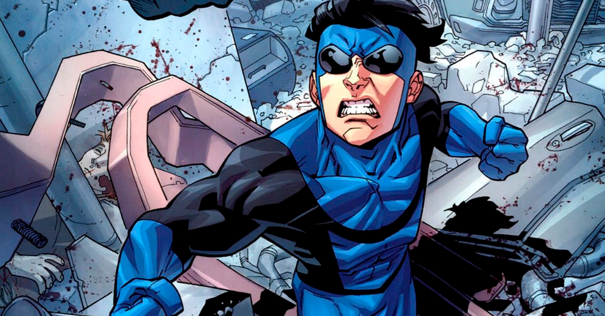
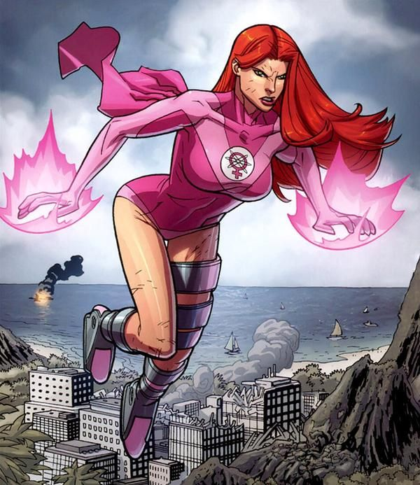
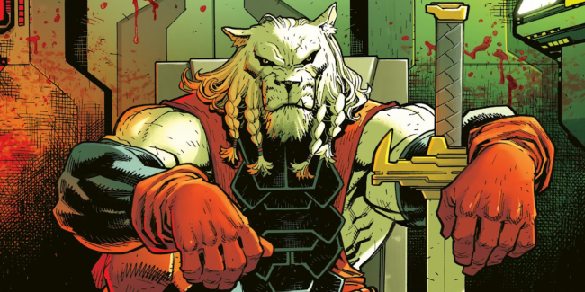
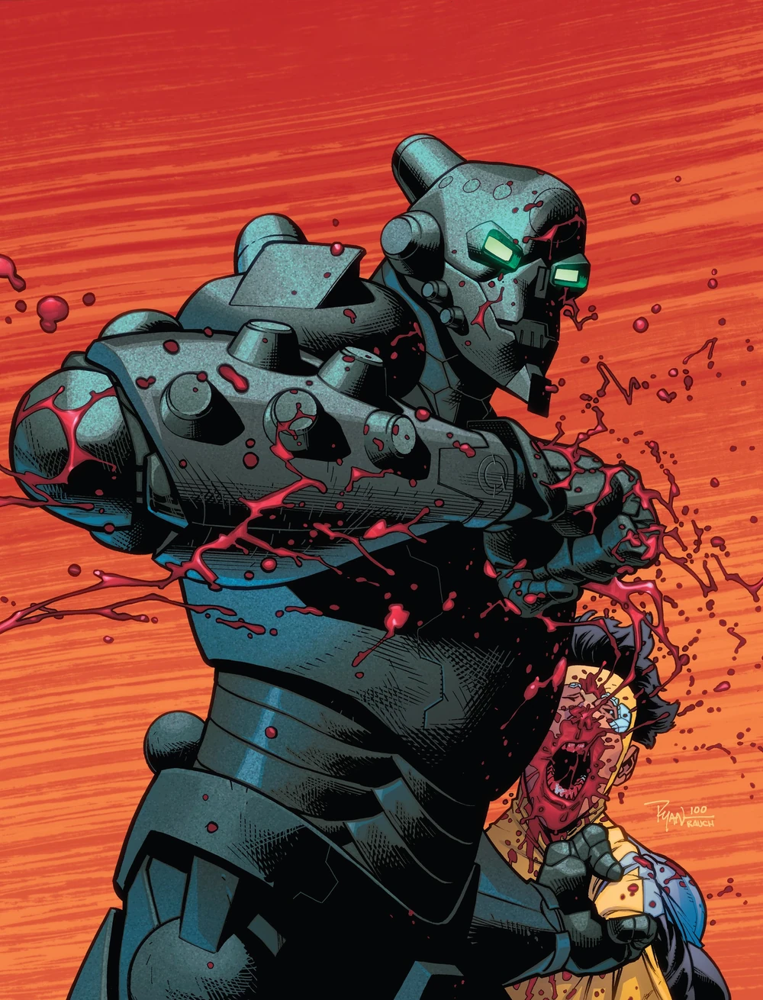

Galeria de Personagens




A série apresenta uma vasta gama de heróis e vilões, cada um com motivações únicas e níveis de poder surpreendentes que desafiam o protagonista Mark.
Abaixo, organizamos algumas informações técnicas sobre os personagens e a produção em tabelas para facilitar a sua compreensão sobre este universo.
Tabela de Poderes
| Personagem | Afiliação | Nível de Força |
|---|---|---|
| Mark (Invencível) | Guardiões do Globo | Alto |
| Nolan (Omni-Man) | Viltrumitas | Extremo |
| Battle Beast | Nômade | Extremo |
Guia de Episódios (Temporada 1)
| Nº | Título Original | Data de Lançamento |
|---|---|---|
| 1 | It's About Time | Março 2021 |
| 8 | Where I Really Come From | Abril 2021 |